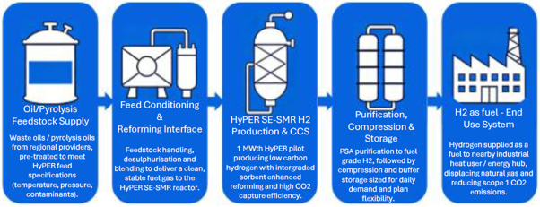
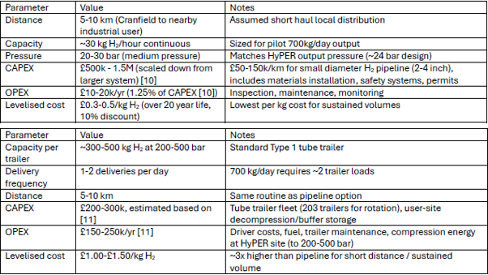
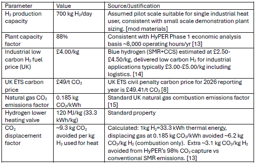
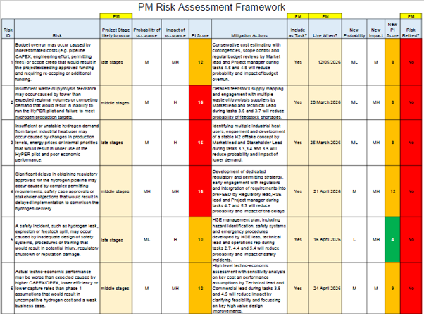
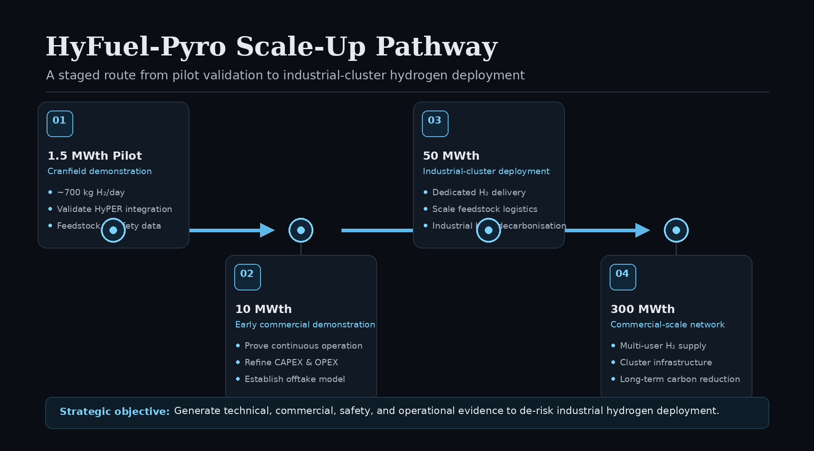

1. The Challenge
Hard-to-abate industrial sectors still depend heavily on fossil fuels for heat and power. Decarbonising these systems requires low-carbon fuels that can be produced reliably, delivered economically, and integrated safely into existing industrial operations.
This individual feasibility study developed a complete concept and delivery plan for an integrated oil-pyrolysis-to-hydrogen pathway based around Cranfield's HyPER pilot capability. The proposed system converts regional waste-oil and pyrolysis-oil feedstocks into low-carbon hydrogen for a nearby industrial heat user.
- Define a technically coherent end-to-end hydrogen pathway
- Justify feedstock, process, storage, delivery, and end-use decisions
- Develop a commercial, carbon, and stakeholder value case
- Create a work breakdown structure, Gantt schedule, milestones, and resources plan
- Identify and mitigate technical, commercial, regulatory, and safety risks

2. Integrated System Concept
The concept integrated waste oil and pyrolysis-oil feedstock with Cranfield's HyPER sorbent-enhanced steam methane reforming technology. The project scope extended beyond the reactor itself to consider the full industrial energy pathway.
The pathway included feedstock transport, desulphurisation and blending, hydrogen purification to fuel-grade specification, compression and buffer storage, a dedicated local delivery route, utilities, instrumentation, safety systems, environmental monitoring, and operational resourcing.
The proposed 1.5 MWth pilot was sized to produce approximately 700 kg of hydrogen per day — sufficient to support a single medium-scale industrial heat user with a relatively steady demand profile.
3. Key Design Decisions
The project selected oil-pyrolysis feedstock because it offers a circular-economy route for regional waste streams, compatibility with the HyPER process after pre-treatment, and potential scalability from pilot demonstration through to larger industrial-cluster deployment.
ADR-compliant road tankers were selected for feedstock delivery because a dedicated waste-oil pipeline would be unjustifiable at pilot scale. A regional supply requirement of approximately 2–3 tonnes per day was considered achievable with waste-oil and pyrolysis-oil sources in the East of England.
For hydrogen delivery, a dedicated 5–10 km pipeline to a local industrial heat user was selected over tube trailers. While it creates a higher initial capital requirement, it offers substantially lower long-term delivery cost, simpler operation, and a clearer route to scale-up.
Dedicated pipeline
Continuous 5–10 km delivery
£0.3–0.5/kg H₂ Selected optionTube trailers
Flexible but logistics-intensive delivery
£1.0–1.5/kg H₂ Alternative option

4. Commercial & Carbon Case
The pilot was modelled around 8,000 operating hours per year, equivalent to approximately 88% utilisation. At 700 kg H₂/day, this gives an annual production estimate of around 225 tonnes of hydrogen.
At a central low-carbon hydrogen price estimate of £4.00/kg, annual hydrogen revenue was estimated at around £900k. Replacing natural gas for industrial heat also created a carbon-displacement value of approximately £103k/year, resulting in a combined order-of-magnitude annual value of roughly £1.0m/year.
The analysis also identified the wider demonstration value: generating real operating data to de-risk a future route from 1.5 MWth pilot scale toward 10 MWth, 50 MWth, and ultimately 300 MWth industrial-cluster deployment.
5. Project Planning & Schedule
I developed a detailed work breakdown structure and a 45-task project schedule in Microsoft Project. The plan defined task durations, dependencies, predecessors, milestones, resource responsibilities, and critical-path logic from project initiation through to implementation readiness and close-out.
The schedule was structured across six stages: project preparation, concept design, market and stakeholder work, detailed planning and approvals, pilot preparation, and monitoring, evaluation, and handover.
An important part of the planning work was identifying activities that could progress in parallel without compromising dependencies. Feedstock mapping, industrial-user engagement, regulatory review, technical interface definition, and early commercial analysis were overlapped where appropriate to compress the overall programme and reduce avoidable delay.
Project charter approved
Concept design selected
Commercial and stakeholder concept agreed
Project plan approved and launch-ready
Ready for pilot implementation
Project-definition and planning complete

6. Risk, Safety & Stakeholders
A structured risk assessment framework was created to identify risks across the project lifecycle, score probability and impact, assign mitigation actions, and link those mitigations directly to project tasks and accountable roles.
The highest-priority risks included hydrogen-pipeline permitting delays, insufficient or unstable feedstock supply, insufficient industrial hydrogen demand, budget pressure, process safety incidents, integration complexity at Cranfield, and uncertainty in techno-economic performance.
Risk mitigation was built into the delivery plan rather than treated as a separate exercise: early market engagement supported offtake certainty, multiple feedstock suppliers reduced supply risk, a dedicated permitting strategy addressed regulatory delays, and an HSE management plan addressed hydrogen, hydrocarbon, and operational safety hazards.
Stakeholder value was considered across Cranfield, technology owners, feedstock suppliers, industrial hydrogen users, regulators, funders, operators, and nearby communities. The plan focused on defining each party's interest, contribution, decision-making role, and value proposition.
7. My Contribution
This was an individual assignment. I produced the final integrated feasibility study, including the project charter, technical and commercial justification, system concept, delivery strategy, Gantt schedule, work breakdown structure, risk framework, stakeholder mapping, supporting market research, and financial case.
The project-planning component was particularly important to me. I built the detailed Microsoft Project schedule, set task predecessors and milestones, assigned resources, and used critical-path logic to identify where parallel delivery could reduce programme duration without weakening technical or commercial dependencies.
I also developed the market and logistics justification around industrial heat demand, feedstock availability, hydrogen delivery options, carbon-value drivers, and the commercial rationale for selecting a dedicated local pipeline over tube-trailer delivery.

Full Technical Report
Download the Assignment
The complete report includes the project charter, delivery pathway, Gantt schedule, risk register, stakeholder framework, logistics assessment, and feasibility economics.
↓ Download Full Report (PDF) ← Back to Modules